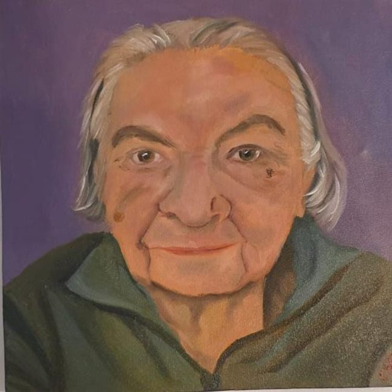

Saltar al contenido
Meraki
Academia Arte-Café
← Volver
Artista
Jorge Reyes
Sobre el artista
Su obra recorre retratos, escenas y paisajes con una mirada detallada.
Obras · 5 obras
Baile de vestido azul
Jorge Reyes
Retrato con copa de vino
Jorge Reyes
Manos dibujando
Jorge Reyes
Paisaje con carreta
Jorge Reyes

Retrato de una mujer mayor
Jorge Reyes